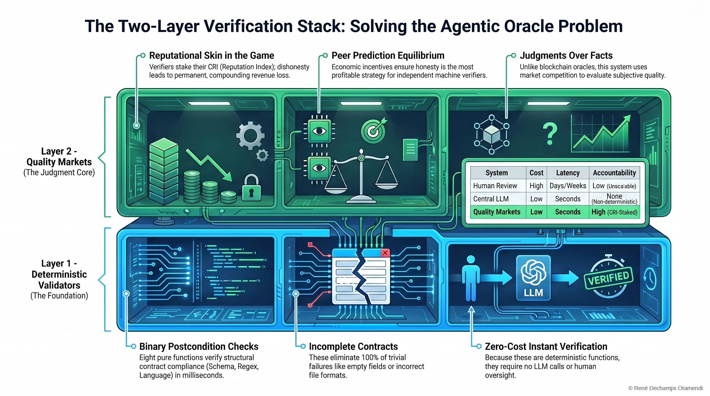

The Oracle Problem
Why semantic truth verification is computationally intractable — and the two-layer architecture that routes around it.
Abstract
The ability of two autonomous agents to agree on whether a piece of work was correctly performed is the foundational verification problem of agentic commerce. This paper argues that the general form of this problem — semantic truth verification at machine speed and over open domains — is computationally intractable, and that any architecture assuming it can be "solved" by a smarter oracle is building on a foundation that will not hold.
We then describe a two-layer architecture that routes around the intractability rather than attempting to solve it: a fast, deterministic validator layer handles everything that admits a machine-checkable predicate (schema, cryptographic proof, policy conformance), and a quality market layer with skin-in-the-game reputation and economic dispute resolution handles the residual — the semantic judgments that no oracle can cheaply make. We argue this decomposition is both necessary and sufficient for agentic commerce to function at scale.
Video Summary & Audio Companion
The Two-Layer Verification Stack

Key Findings
- General-purpose semantic truth verification at machine speed is computationally intractable — no smarter oracle solves it.
- The path forward is architectural decomposition, not a better oracle: separate what is machine-checkable from what is not.
- A deterministic validator layer handles schema, cryptographic proof, and policy conformance — cheaply, at scale, with no model in the loop.
- A quality market layer — with stake, CRI-style reputation, and economic dispute resolution — handles the residual semantic judgments.
Cite this paper
@article{dechamps2026oracle,
author = {Dechamps Otamendi, Ren\'e},
title = {The Oracle Problem in Autonomous Agent Commerce: Why Semantic Truth Verification Is Computationally Intractable},
year = {2026},
month = {March},
note = {Preprint},
doi = {10.5281/zenodo.19208440},
url = {https://doi.org/10.5281/zenodo.19208440},
orcid = {0009-0007-1033-6519}
}